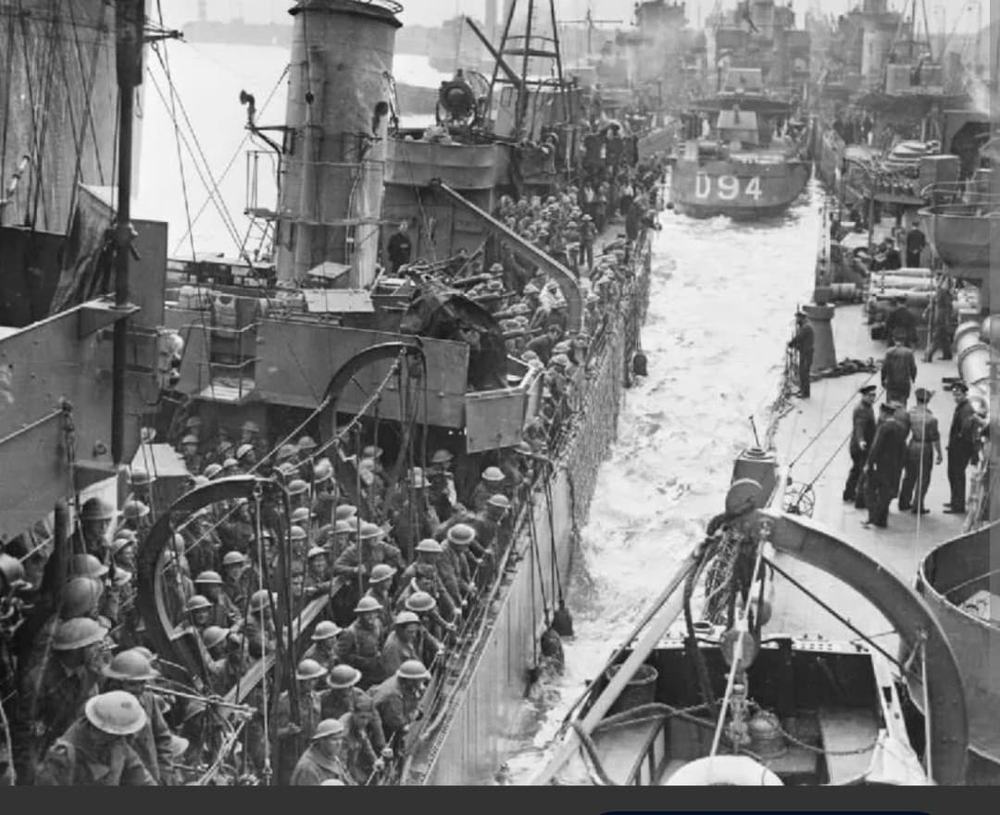
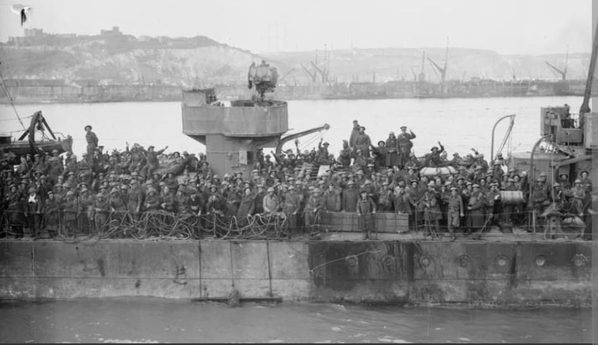
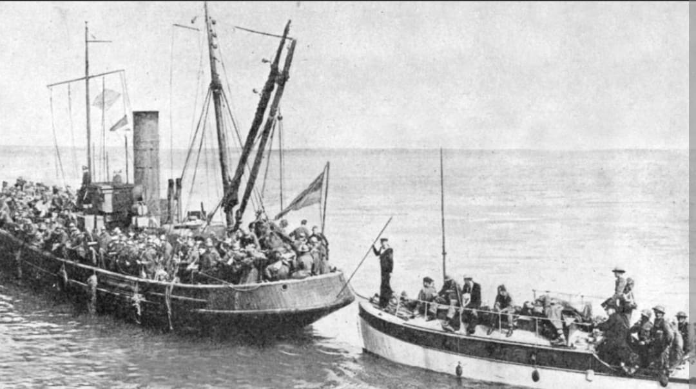
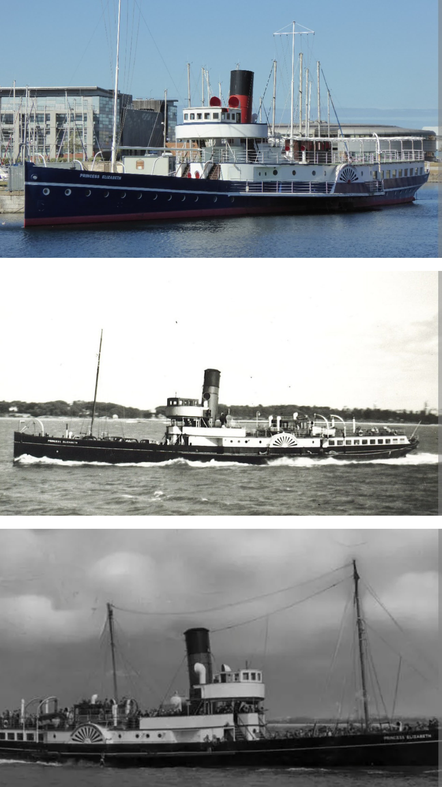

Du 26 mai au 4 juin 1940, alors que plus de 338 000 soldats britanniques, français et belges sont encerclés dans la poche de Dunkerque, l’Amirauté britannique déclenche l’Opération Dynamo. Face à un port en ruines, encombré d’épaves et constamment bombardé par la Luftwaffe, l’évacuation repose sur l’engagement d’une flotte hétéroclite de près de 850 à 900 navires militaires et civils.
Des puissants destroyers de la Royal Navy et de la Marine nationale française aux modestes barques de pêche et yachts privés, chaque embarcation joue un rôle vital pour arracher les troupes alliées aux plages de Malo-les-Bains, Bray-Dunes et Zuydcoote ainsi qu’à la jetée Est du port de Dunkerque.
Contrairement à la légende populaire qui attribue l’essentiel du sauvetage aux petits bateaux de plaisance, la grande majorité des soldats (environ 70 % des effectifs évacués) a été transportée par de grands navires capables d’accoster le long de la jetée Est (East Mole), une digue en bois étroite qui n’était pourtant pas conçue pour l’accostage :

Les grands navires ayant un tirant d’eau trop profond pour approcher des plages à faible pente de Dunkerque, les soldats devaient avancer dans l’eau glacée jusqu’aux épaules, formant de longues files humaines sous les mitraillages des chasseurs allemands. Pour faire la navette entre le rivage et les destroyers ancrés au large, la Grande-Bretagne réquisitionne des centaines de petites embarcations civiles : les célèbres « Little Ships ».
Cette flottille civile rassemble :
Beaucoup sont barrés par leurs propres propriétaires civils accompagnés de marins de la Royal Navy. Plus de 240 navires alliés (militaires et civils confondus) sont coulés durant ces neuf jours, témoignant de la violence des combats aériens et navals au large de Dunkerque.

Parmi tous les navires légendaires de l’Opération Dynamo, le PS Princess Elizabeth occupe une place à part, intimement liée à l’histoire de Dunkerque. Construit en 1927 à Southampton, ce élégant vapeur à roues à aubes de 60 mètres de long assurait avant-guerre des croisières touristiques entre Southampton et l’île de Wight. Réquisitionné dès septembre 1939 par la Royal Navy, il est transformé en dragueur de mines auxiliaire (sous le matricule HMS Princess Elizabeth).
Grâce à son très faible tirant d’eau (moins de 2 mètres) et à la maniabilité exceptionnelle de ses roues à aubes latérales, il est idéal pour manœuvrer près des hauts-fonds de Dunkerque et le long de la jetée Est. Entre le 29 mai et le 3 juin 1940, sous le commandement du lieutenant de vaisseau C.H. Reed, le Princess Elizabeth effectue quatre traversées périlleuses sous le feu constant de l’artillerie allemande et des bombardiers en piqué Stuka.
Au total, ce navire d’excursion sauve à lui seul 1 673 soldats alliés (dont de très nombreux soldats français lors des dernières rotations). Après la guerre, il reprend son service civil avant de revenir symboliquement à Dunkerque à la fin du XXe siècle, amarré dans le bassin du Commerce face au musée portuaire, où il demeure l’un des derniers témoins flottants authentiques de l’Opération Dynamo.

Page du Musée HOP WW2 – Section Dunkerque & Opération Dynamo